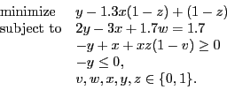

Next: MST format Up: Model File Formats Previous: ILP format
The OPB file format is used to store pseudo-boolean satisfaction and pseudo-boolean optimization models. These models may only contain binary variables, but these variables may be complemented and multiplied together in constraints and objectives. Pseudo-boolean models in OPB files are translated into a MIP representation by Gurobi. The syntax of the OPB format is described in detail by Roussel and Manquinho. However, the OPB format supported by Gurobi is less restrictive, e.g., fractional coefficients are allowed.
The following is an example of a pseduo-boolean optimization model
|  | (1) |
* This is a dummy pseduo-boolean optimization model min: y - 1.3 x ~z + ~z; 2 y - 3 x + 1.7 w = 1.7; -1 y + x + x z ~v >= 0; -1 y <= 0;
Lines starting with * are treated as comments and
ignored. Non-comment lines must end with a semicolon
;. Whitespace characters must be used to separate variables. The
complement of a variable may be specified with a tilde ~.
Only minimization models are supported. These models must be specified with the min: objective keyword. This keyword must appear before other constraints. Satisfiability models may be defined by omitting the objective.
Constraint senses >=, =, and <= are supported.